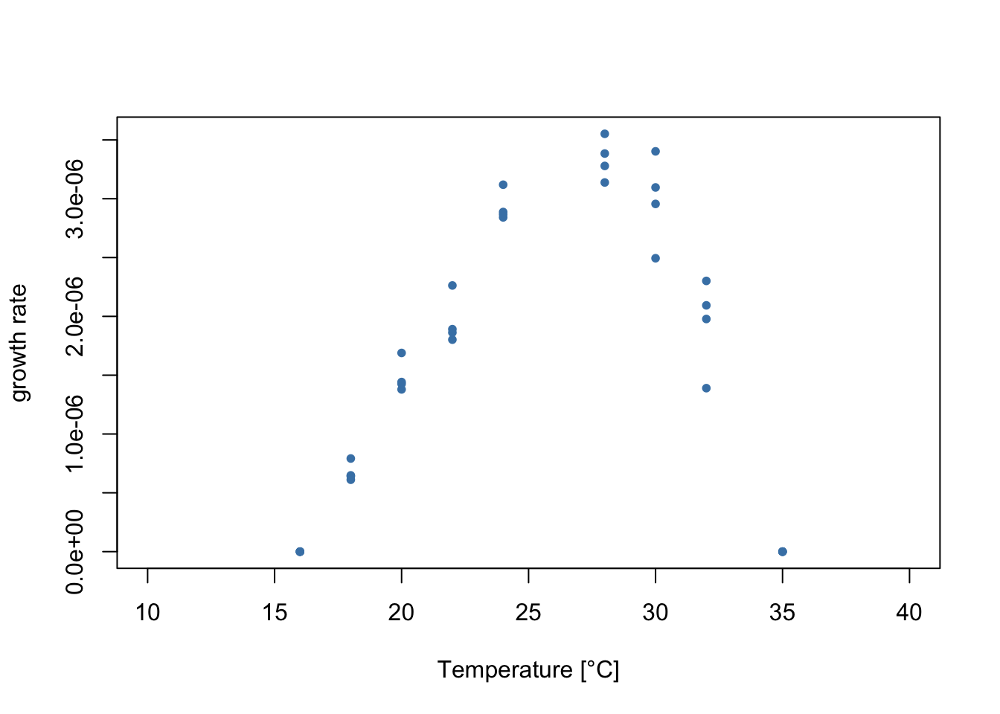
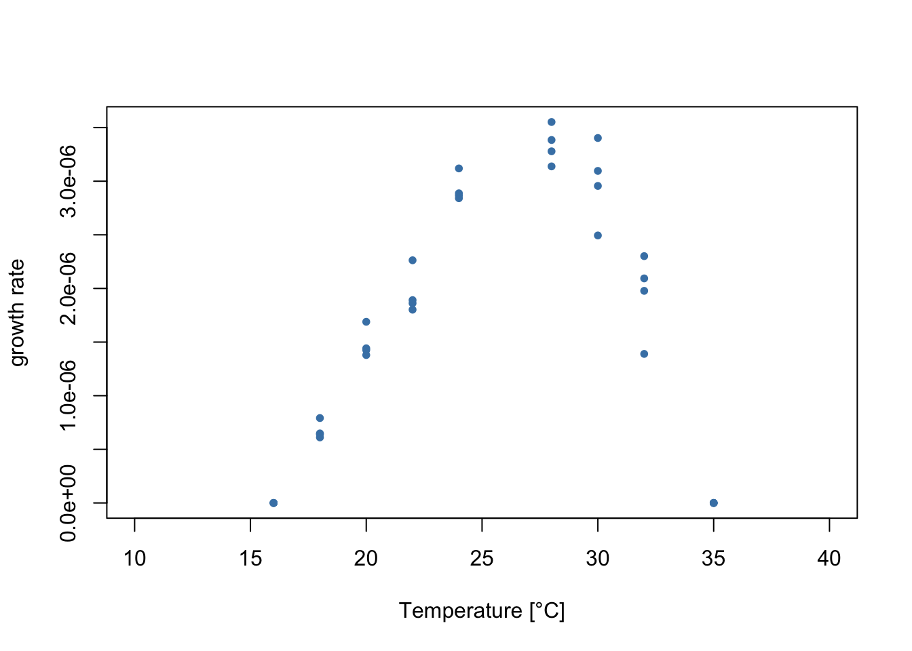
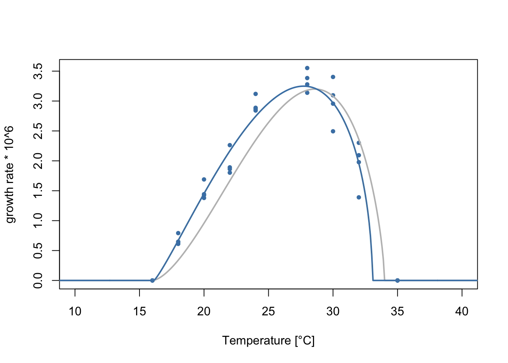
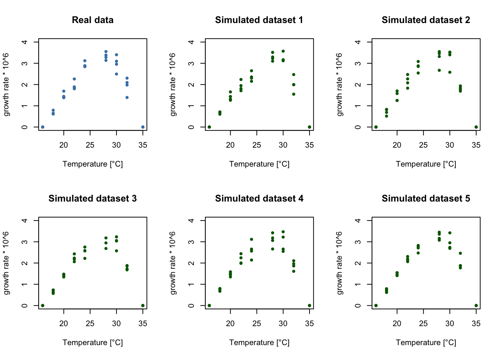

data <- read.csv('TPC_data_examples.csv')
data <- subset(data, data$id == 43041)
plot(data$temperature, data$trait_value, xlim=c(10, 40),
xlab='Temperature [°C]', ylab='growth rate',
pch=20, col='steelblue')
In this example, we’ll fit flexTPC to data on the population growth of the marine cyanobacteria Trichodesmium erythraeum with a maximum likelihood approach. This example shows how to deal with data where the variance varies with trait performance, and how to assume a different probability distribution than the normal distribution for our observations.
Let’s plot the data!
data <- read.csv('TPC_data_examples.csv')
data <- subset(data, data$id == 43041)
plot(data$temperature, data$trait_value, xlim=c(10, 40),
xlab='Temperature [°C]', ylab='growth rate',
pch=20, col='steelblue')
As in other regression problems, when fitting a thermal performance curve model to data it is helpful to think about the model as consisting of two parts:
A “deterministic part” that consists of a functional form \(r(T)\) for the thermal performance curve (such as flexTPC or the Briere model) that describes the temperature dependence of a biological trait.
A “stochastic part” that describes a plausible mechanism of generating the observed data points from the model (or, in other words, a model of the errors). This is usually done by assuming \(r(T)\) to be the mean (or some other location parameter, like the median or mode) of a probability distribution that generates the data points.
Previously, we showed how to fit flexTPC with least squares estimation. In least squares estimation, we do not model the second part explicitly. Rather, we assume that the “best curve” is the one that minimizes the square difference of the curves and the data points.
However, it turns out that least squares estimation is equivalent to maximum likelihood estimation with the assumption that the errors are normally distributed with a constant variance. These assumptions may not be ideal for thermal performance data because of various reasons:
Biological traits that are modeled by TPCs are often non-negative. Because of this, it may be better to model them with something other than a normal distribution (e.g. a Gamma or log-normal distribution).
The model residuals may not have a constant variance. Particularly, there is often greater variability in measurements when the trait performance is high than when it is low.
We can see that both of these things are true in the data!
We can deal with these issues by explicitly modeling how the data points are generated by our model. As an example, we will assume that, when \(T_{\min}<T<T_{\max}\) a data point \(y_i\) will be Gamma distributed, with a mean given by the flexTPC model with parameters \(\mathcal{P}\). We will further assume that performance will be strictly zero outside this interval. This leads to the following statistical model:
\[y_{i}|T_{i},\mathcal{P},\sigma \sim\begin{cases} \mathrm{Gamma}(\mu=r(T_{i};\mathcal{P}),\sigma) & T_{\min}<T_{i}<T_{\max}\\ 0 & \text{otherwise} \end{cases} \]
Here, we use the notation \(r(T_{i};\mathcal{P})\) to represent the flexTPC model equation at temperature \(T_i\) with parameters \(\mathcal{P}=\{T_{\min}, T_{\max},r_{\max},\alpha,\beta\}\).
We could stop here and assume that the standard deviation \(\sigma\) is constant. However, we can also account for variation in the standard deviation with trait performance. Many approaches are possible, but here we will do this with the following model:
\[\ln\sigma = \eta_0 + \eta_1 r(T_{i};\mathcal{P}) \] This is a linear model for the natural logarithm of the standard deviation. The log-transform ensures that we always have a positive standard deviation, since
\[\sigma = e^{\eta_0 +\eta_{1}r(T_i;\mathcal{P})}\].
We can now estimate the parameters of our model through maximum likelihood estimation. The likelihood of a statistical model is a function that describes how compatible the model parameters are with the data. It is defined as the probability of observing the data given some specific fixed values of the model parameters (in our case, these correspond to \({T_{\min}, T_{\max}, r_{\max}, \alpha, \beta, \eta_{0}, \eta_{1}}\)). The maximum likelihood estimate (MLE) of the parameters consists of the parameter values that maximize the likelihood (or, equivalently, minimize the negative log likelihood, which tends to be more numerically stable).
In R, the Gamma distribution is parametrized in terms of a shape parameter \(a\) and a rate parameter \(b\) rather than mean and standard deviation. But it turns out to be simple to convert between these parametrizations since \(a=\mu^2/\sigma^2\) and \(b=\mu/\sigma^2\).
Let’s code a function that calculates the negative log-likelihood according to our model.
# Returns a function that calculates the negative log likelihood.
get_negloglk_fn <- function(temp, y, lower.bounds, upper.bounds) {
# temp: Vector of measured temperature values.
# y: Vector of measured performance values.
# lower_bounds, upper_bounds: Lower and upper bounds for the parameters.
f <- function(par) {
# Return infinity (worst possible error) if parameters are outside of upper and lower bounds.
if((sum(par < lower.bounds) + sum(par > upper.bounds)) > 0) {
return(Inf)
} else {
# Rename parameters for readability of code.
Tmin <- par[1]
Tmax <- par[2]
rmax <- par[3]
alpha <- par[4]
beta <- par[5]
eta0 <- par[6]
eta1 <- par[7]
# Find observations that are inside the interval (Tmin, Tmax)
T.idx <- (temp > Tmin) & (temp < Tmax)
# Return infinity if any measurements outside the (Tmin, Tmax)
# temperature range are nonzero. Otherwise these measurements have
# a probability of one (so they don't contribute to the log-likelihood as
# log(1) = 0.
if(sum(y[!T.idx] != 0) > 0) {
return(Inf)
}
# Return negative log-likelihood of Gamma model if inside (Tmin, Tmax) interval.
mu = flexTPC(temp[T.idx], Tmin, Tmax, rmax, alpha, beta)
sigma = exp(eta0 + eta1 * mu)
# Convert mean and standard deviation to shape and rate parameters for
# Gamma distribution.
a = mu^2 / sigma^2
b = mu / sigma^2
return(sum(-dgamma(y[T.idx], a, b, log=TRUE))) # log=TRUE calculates the log-likelihood.
}
}
return(f)
}Let’s now find our maximum likelihood estimate (MLE) of the model parameters by minimizing the negative log-likelihood.
init.par <- c(16.5, 34, 3.2, 0.7, 0.3, log(0.5), 0)
names(init.par) <- c("Tmin", "Tmax", "rmax", "alpha", "beta", "eta0", "eta1")
lower.bounds <- c(0, 30, 0, 0.1, 0.1, -10, -10)
upper.bounds <- c(25, 45, 10, 0.9, 0.7, 10, 10)
temp <- data$temperature
y <- data$trait_value * 10^6
f <- get_negloglk_fn(temp, y, lower.bounds, upper.bounds)
#f(init.par)
fit <- optim(init.par, f, control=list(maxit=10000)) Tmin Tmax rmax alpha beta eta0 eta1
16.1215158 33.0563842 3.2488154 0.6852062 0.3544492 -2.6753234 0.5518849 Let’s plot the data with the fitted flexTPC model.
temp <- seq(0, 45, 0.1)
plot(data$temperature, y, xlim=c(10, 40),
xlab='Temperature [°C]', ylab='growth rate * 10^6',
pch=20, col='steelblue')
lines(temp, flexTPC(temp, Tmin=16, Tmax=34, rmax=3.2, alpha=0.7, beta=0.3),
lwd=2, col='gray')
lines(temp, flexTPC(temp, Tmin=fit$par[1], Tmax=fit$par[2], rmax=fit$par[3], alpha=fit$par[4], beta=fit$par[5]),
col='steelblue', lwd=2)
As before, we can calculate the optimal temperature, approximate thermal breadth at 88% and half-maximum temperatures from our parameter estimates.
Topt <- fit$par['alpha'] * fit$par['Tmax'] + (1.0 - fit$par['alpha']) * fit$par['Tmin']
B <- fit$par['beta'] * (fit$par['Tmax'] - fit$par['Tmin'])
halfmax_temps <- flexTPC_roots(0.5, # wref
fit$par['Tmin'],
fit$par['Tmax'],
fit$par['alpha'],
fit$par['beta'])
halfmax_breadth <- halfmax_temps[2] - halfmax_temps[1]
fit$par <- c(fit$par, Topt, B, halfmax_temps, halfmax_breadth)
names(fit$par) <- c("Tmin", "Tmax", "rmax", "alpha", "beta", "eta0", "eta1", "Topt", "B", "Thm1", "Thm2", "halfmax_breadth")
fit$par Tmin Tmax rmax alpha beta
16.1215158 33.0563842 3.2488154 0.6852062 0.3544492
eta0 eta1 Topt B Thm1
-2.6753234 0.5518849 27.7253934 6.0025511 20.4578027
Thm2 halfmax_breadth
32.3433299 11.8855272 We could calculate confidence intervals here with a nonparametric boostrap, as done previously on the least squares example. However, having an explicit statistical model allows us to use a parametric bootstrap approach. This relies more in the model assumptions, but can be a better choice when the statistical model is a good description of the data and there is limited data available. A parametric boostrap approach also allows us to simulate data from repeated experiments measured at the same temperatures.
Rather than resampling our data points to construct our boostrap samples, we will simulate new datasets from our fitted model. We will then repeat the procedure to find the best fitting parameters (estimating the parameters for each boostrap sample) and use the distribution of the fitted parameters to construct confidence intervals.
We start by writing a function that simulates data from our model. We will assume the measured temperatures and the number of replicates (i.e. the experimental design) is the same as in the original data, but will draw the performance values randomly according to our fitted statistical model.
simulate_dataset <- function(temperatures, Tmin, Tmax, rmax, alpha, beta, eta0, eta1) {
y <- rep(0, length(temperatures))
T.idx <- (temperatures > Tmin) & (temperatures < Tmax)
# Find mean and sigma at temperatures from the dataset.
mu <- flexTPC(temperatures[T.idx], Tmin, Tmax, rmax, alpha, beta)
sigma <- exp(eta0 + eta1 * mu)
# Transform mu and sigma to a, b parameters of Gamma distribution.
a <- mu^2 / sigma^2
b <- mu / sigma^2
# Draw random value from Gamma distribution assumed by our model.
y[T.idx] <- rgamma(length(temperatures[T.idx]), shape=a, rate=b)
return(y)
}As a parametric bootstrap assumes the statistical model is a good description of the data, it is a good idea to check for discrepancies between the real data and data simulated by the model. To do this, let’s plot a few simulated datasets, assuming the true model parameters are given by the MLE. If the statistical model is a good description of the data, these simulated datasets should look similar to the true data (ideally, our true data should look like it could have plausibly come from the simulations). If this is not the case, we may need to reexamine our model assumptions.
par(mfrow=c(2,3))
# Plot real data in blue
plot(data$temperature, data$trait_value * 10^6, pch=20, ylim=c(0, 4), xlab='Temperature [°C]', ylab='growth rate * 10^6',
col='steelblue', main='Real data')
# Plot five simulated datasets in green.
for(i in 1:5) {
temp <- data$temperature
y <- simulate_dataset(temp, fit$par['Tmin'], fit$par['Tmax'], fit$par['rmax'],
fit$par['alpha'], fit$par['beta'], fit$par['eta0'],
fit$par['eta1'])
plot(temp, y, pch=20, ylim=c(0, 4), xlab='Temperature [°C]', ylab='growth rate * 10^6',
col='darkgreen', main=paste('Simulated dataset', i))
}
It looks like our variable variance model is generating datasets that look similar to the true data! So we can go ahead and generate a large number of boostrap samples and calculate our confidence intervals.
## Performs a parametric boostrap to get confidence intervals of model
## parameters.
set.seed(42) # Set seed for reproducibility
# Number of bootstrap samples
# Note: You can make N small for testing so the code runs faster, but should be
# at least 10000 for real applications.
N <- 10000
# Matrix to store bootstrap results
bts_samples <- matrix(nrow=N, ncol=11)
temp <- data$temperature
# Change scale of trait values to be close to unit scale to help optimization.
y <- data$trait_value * 10^8
n.obs <- length(temp)
init.par <- c(16.5, 34, 3.2, 0.7, 0.3, log(0.5), 0)
lower.bounds <- c(0, 30, 0, 0.1, 0.1, -10, -10)
upper.bounds <- c(25, 45, 10, 0.9, 0.7, 10, 10)
for(i in 1:N) {
# Simulate new dataset from the model.
y.sample <- simulate_dataset(temp, fit$par['Tmin'], fit$par['Tmax'],
fit$par['rmax'], fit$par['alpha'],
fit$par['beta'], fit$par['eta0'],
fit$par['eta1'])
f <- get_negloglk_fn(temp, y.sample, lower.bounds, upper.bounds)
# Store current sampled observations in dataframe for fitting.
sample.fit <- optim(init.par, f, control=list(maxit=100000))
# Store bootstrap samples.
bts_samples[i, 1:7] <- sample.fit$par
}colnames(bts_samples) <- c('Tmin', 'Tmax', 'rmax', 'alpha', 'beta', 'eta0', 'eta1',
'Topt', 'B', 'Thm1', 'Thm2')
# Calculate Topt and B from equations.
bts_samples[, 'Topt'] <- (bts_samples[, 'alpha'] * bts_samples[, 'Tmax']
+ (1 - bts_samples[, 'alpha']) * bts_samples[, 'Tmin'])
bts_samples[, 'B'] <- bts_samples[, 'beta'] * (bts_samples[, 'Tmax'] - bts_samples[, 'Tmin'])
# Calculate half-max temperatures numerically for all bootstrap samples.
hm_temps_samples <- apply(bts_samples[, 1:5], 1, function(x) flexTPC_roots(0.5, x[['Tmin']], x[['Tmax']], x[['alpha']], x[['beta']], tol=1e-6))
bts_samples[, c('Thm1', 'Thm2')] <- t(hm_temps_samples)
ci <- apply(bts_samples, 2, quantile, c(0.025, 0.975))
t(ci) 2.5% 97.5%
Tmin 16.0000000 17.3820173
Tmax 32.0864168 35.0000000
rmax 2.9037797 3.4692491
alpha 0.5410080 0.7924757
beta 0.3067667 0.4485974
eta0 -3.7371569 -0.9067382
eta1 -0.1519175 1.0152031
Topt 26.6990805 29.0110637
B 5.6785982 7.1485108
Thm1 19.6890763 20.7379524
Thm2 32.0427421 33.4706858[1] Boyd, Philip W., Tatiana A. Rynearson, Evelyn A. Armstrong, Feixue Fu, Kendra Hayashi, Zhangxi Hu, David A. Hutchins, et al. 2013. “Marine Phytoplankton Temperature versus Growth Responses from Polar to Tropical Waters – Outcome of a Scientific Community-Wide Study.” Edited by Howard Browman. PLoS ONE 8 (5): e63091. https://doi.org/10.1371/journal.pone.0063091.
[2] Kontopoulos, Dimitrios - Georgios, Arnaud Sentis, Martin Daufresne, Natalia Glazman, Anthony I. Dell, and Samraat Pawar. 2024. “No Universal Mathematical Model for Thermal Performance Curves across Traits and Taxonomic Groups.” Nature Communications 15 (1). https://doi.org/10.1038/s41467-024-53046-2.